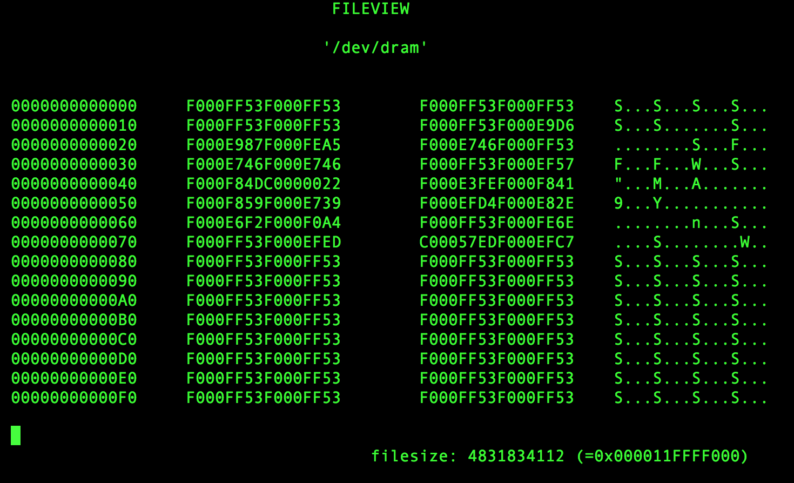

Linux用户程序如何访问物理内存
Contents
本文转载于：http://ilinuxkernel.com/?p=1248
注意：转载文中的代码在最新的内核上已经无法编译通过，原文中留言区提到的获取内核总的页数的方法有点瑕疵。这些在本文中都会进行修正。 本文中使用的内核版本为：3.10.0-693.21.1
用户态的程序都是在内存保护模式下使用内存，无法直接访问物理内存。同时用户程序使用的地址，也并不是物理地址，而是逻辑地址。至于这些逻辑地址对应的物理内存在哪里，用户进程本身并不知道。
通过用户程序若想访问物理内存，我们需要通过内核才能实现。本文介绍基于内核模块的方式，实现在Linux中用户态程序访问所有物理内存。
内核模块编写
通过读设备文件的方式，实现物理地址访问。将物理地址，作为参数f_pos传递:
static ssize_t
dramdev_read(struct file *filp, char __user *buf, size_t count, loff_t *f_pos)
在内核代码中，是无法直接访问物理地址的，代码能访问的都是逻辑地址。此时我们需要先将物理地址转换成逻辑地址，才能在代码中对地址读写。
物理地址转换为逻辑地址
物理地址转换为逻辑地址的方法：
（1）根据物理地址，计算出对应的页面号(PFN)和页内偏移
// determine which physical page to temporarily map
// and how far into that page to begin readding from
page_number = *f_pos / PAGE_SIZE;
page_indent = *f_pos % PAGE_SIZE;
（2）根据PFN找到对应的struct page指针
// get the page from pfn
pp = pfn_to_page(page_number);
（3）通过kmap映射成逻辑地址
from = kmap(pp) + page_indent;
映射成逻辑地址后，我们直接通过from指针来访问物理地址f_pos了。
我的修改
在原文的留言区提到使用get_num_physpages来获取系统物理内存页面数量。我发现使用get_num_physpages有点瑕疵，它返回的是系统上总的物理页面的个数，当存在内存hole时，会导致有些物理内存不能访问。
我们可以使用如下方法，获取总的内存页面数，当然它包含内存hole。
static inline unsigned long get_total_physpages(void)
{
int nid;
unsigned long phys_pages = 0;
for_each_online_node(nid)
phys_pages += node_spanned_pages(nid);
return phys_pages;
}
当指定的物理地址是这些内存hole时，读出来的值可能无意义。
模块加载和使用方式
编译模块
[root@localhost ~/linux_memory_addr/dram] # make
make -C /lib/modules/3.10.0-693.21.1.el7.x86_64/build M=/root/work/linux_memory_addr/dram modules
make[1]: Entering directory `/usr/src/kernels/3.10.0-693.21.1.el7.x86_64'
CC [M] /root/work/linux_memory_addr/dram/dram.o
Building modules, stage 2.
MODPOST 1 modules
CC /root/work/linux_memory_addr/dram/dram.mod.o
LD [M] /root/work/linux_memory_addr/dram/dram.ko
make[1]: Leaving directory `/usr/src/kernels/3.10.0-693.21.1.el7.x86_64'
加载模块
[root@localhost ~/linux_memory_addr/dram] # insmod dram.ko
创建字符设备
模块代码中，将字符设备号设为85。这个设备号也可以自己改，与系统不冲突就行。
[root@localhost ~/linux_memory_addr/dram] # mknod /dev/dram c 85 0
物理内存数据查看
我们使用简单的程序fileview来看物理内存中的实际数据，物理地址可以手工输入的。
